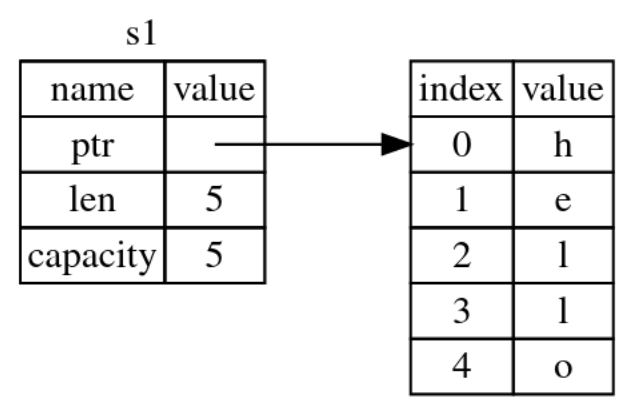
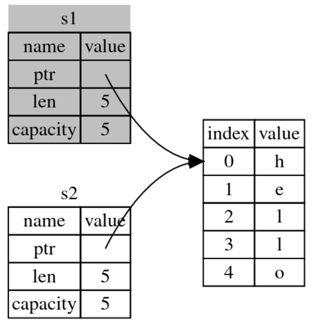
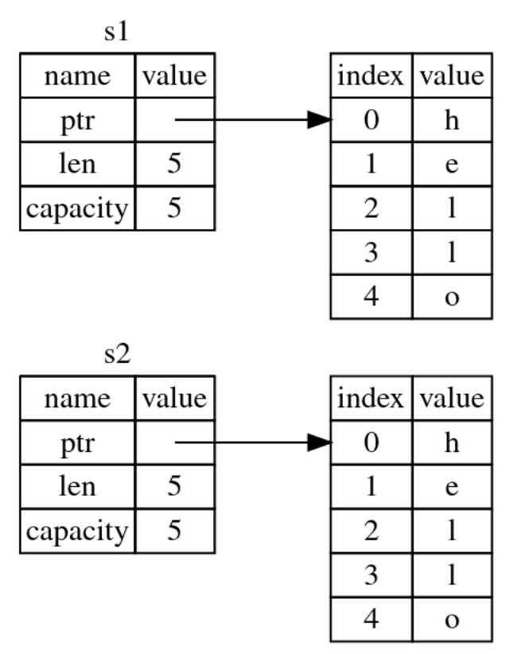

Rust-5-变量数据的移动拷贝与克隆
引言
这篇文章主要介绍Rust中变量数据的：移动、拷贝和克隆。
文章目录
0×1.栈和堆概念浅析
简单的讲，栈和堆都是内存提供给程序使用的存储空间，不同的是，栈中的数据都必须占用固定已知的大小，而堆中的数据则显得无序一些，堆一般用于存储那些，可能会随着时间变化而动态增加，或删减的数据。
栈的工作方式：
大家可以将内存中的栈，想象成一个置物架，数据就是一个个盘子，我们存数据的时候，是将一个个盘子叠起来放到置物架上，而取出数据的时候，必须从盘子的顶部一个个拿（不能从中间或底部抽取盘子），而这就是栈数据“先进后出”的特性。
堆的工作方式：
当我们需要存储足够多的数据时，程序就需要向系统申请内存堆来存放这些数据，系统会返回给程序一个指向堆内存地址的指针以及堆的空间大小等信息，而指针数据以及堆空间信息一般是固定的，所以这些信息一般又被存放到栈上；我们可以将这些堆空间，想象成酒店的一间间单独包间，有大有小，而系统就是大堂经理，我们是程序，我们去酒店的时候，直接找大堂经理，告诉他我们有多少人（申请空间），这样大堂经理就会给我们分配一个能够容纳这么多人的包间，以及一个门牌号（指针），后面当其他人来的时候，只需要根据这个门牌号，就能找到我们的包间。
栈和堆两者存取数据的差异：
将数据存入堆，程序需要先向系统申请空间，系统就会根据程序的需求，分配内存空间，再将指向堆的指针以及堆的信息存入栈中，而访问堆数据，需要先找到存放在栈上指向堆的指针，再根据指针指向的地址，去堆中存取数据，向栈存入一个数据，只需要直接放在栈的顶端就行。
0×2.什么是变量数据的移动
理解了栈和堆的概念之后，我们来看看Rust中的变量在内存中是如何存储的，首先请看下面的代码：
fn main() {
let s1=String::from("hello"); //首先我们声明了一个变量s1
let s2=s1; //再将s1赋值给s2
}
s1声明之后，系统根据程序需求，从堆上分配用于存储s1数据的内存空间，并在栈中存储了指向堆数据的指针、堆数据长度、以及从系统申请到的内存空间容量等信息，s1在内存中如下图所示，左边是s1存在栈上的数据，右边是s1存在堆上的数据：
第二句代码"let s2=s1;"之后，内存中的s1和s2如下图所示：
在Rust中，当我们将s1赋值给s2之后，程序会将s1在栈上的数据做一个移动操作，移动给s2（同样在栈上），如上图所示，移动之后，栈上原来s1的栈数据就被删除了，我们可以说s1被移动到了s2中；Rust确保对同一个堆数据，有且只有一个栈指针指向它，这就意味着，在第二句代码之后，我们再去访问s1，将会报错，下面这段代码编译会直接报错：
fn main() {
let s1=String::from("hello");
let s2=s1;
println!("{}",s1);
//value borrowed here after move
//报错信息提示，s1已经被移动
}
那么，为什么不保留s1，只是将s1的栈数据拷贝给s2呢？如上面的图二所示，如果s1和s2的指针都指向同一个堆数据，当s1和s2都离开作用域的时候，他们会尝试释放相同的内存，这就会引发内存的"二次释放"，这也是比较棘手的内存bug之一，但如果使用了"移动"这个操作之后，s1就直接失效了，程序只需要在s2离开作用域之后释放掉内存就行，不再会出现内存二次释放的问题；另外，为什么不直接将s1的栈数据和堆数据一并拷贝给s2，如下图所示：
因为性能，如果每个变量赋值，都需要将堆数据做一个完整的拷贝，在堆数据量巨大的时候，程序的性能会非常的糟糕，所以最好的做法就是，只移动栈数据，这样就能兼顾性能，又能做到内存安全。
0×3.什么是变量数据的拷贝
让我们来看下面的实例：
//根据本文第二部分的理论，这段代码应该报错才对
//因为x被赋值给了y，这时x就失效了
//但事实并非如此，程序可以被编译执行
fn main() {
let x:i32=233;
let y:i32=x;
println!("{},{}",x,y);
}
程序输出：
233,233
这段代码似乎与我们刚才在第二部分中学到的内容自相矛盾，x被赋值给y，但是在此之后，x仍然有效；
这是因为，像整型这样的在编译时已知大小的类型被整个存储在栈上，所以在做赋值的时候，是直接从栈到栈的拷贝（因为y也同样是整形，被整个存储到栈上），栈到栈的拷贝是非常迅速的，没有性能问题，所以没必要在将数据拷贝给y后，让x无效；
除了整形外，下面这些数据类型同样被完整存储到栈上：
• 所有整数类型，比如 u32;
• 布尔类型，bool，它的值是 true 和 false;
• 所有浮点数类型，比如 f64;
• 字符类型，char;
• 元组，当且仅当其包含的类型都是完整栈类型的时候。比如，(i32, i32) 都是整形，但 (i32, String) 就不行，因为String类型会被存储到堆上;
0×4.什么是变量数据的克隆
如果我们确实需要复制堆上的数据，实现下图中的效果，可以使用clone()函数。
请看下面的实例：
fn main() {
let s1:String=String::from("hello");
let s2=s1.clone(); //使用clone()函数克隆s1栈和堆数据
println!("{}-{}", s1, s2);
}
程序输出：
hello-hello
当我们对s1使用clone()函数后，s1并没有被删除，而是将s1的栈和堆数据完整的克隆给了s2，我们要谨慎使用这个功能，在堆中数据非常庞大的情况下，克隆函数会让程序变得异常缓慢。